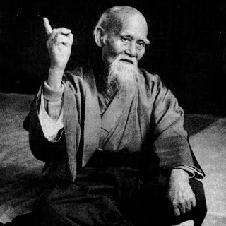

|
合気道 (Aikidó) |
||
| Története | Jelentése és etikája | Szellemi háttér |
|
Az aikidó (合気道, nyugaton Aikido, Aikidō) tradicionális alapokra épülő modern, japán harcművészet. Alapítója Uesiba Morihei, ismertebb nevén O-szenszej, azaz „Nagymester”, „Nagy tanító”. Az aikidó gyakorlati technikái a kifinomult mozgáson, az ellenfél erejének érzékelésén és elvezetésén, valamint annak szétszórásán vagy az ellenfélre való visszafordításán alapulnak. Az Alapító (Uesiba Morihei) megfogalmazása szerint az aikidó egy olyan Út, amellyel le tudjuk győzni a konfliktusokat magunkban, és amellyel békét teremthetünk a világegyetemben. Ennek megfelelően az aikidó gyakorlása során nem létezik ellenfél vagy ellenség, hanem partner van, akit vezetnünk és irányítanunk kell. A gyakorlónak tehát nem a pusztításra, hanem minden esetben az építő jellegű konfliktuskezelésre kell törekednie.  O-szenszei legfontosabb szabályai az aikidó gyakorlására:
Források: https://en.wikipedia.org/wiki/Aikido https://ja.wikipedia.org/wiki/合気道 |
||